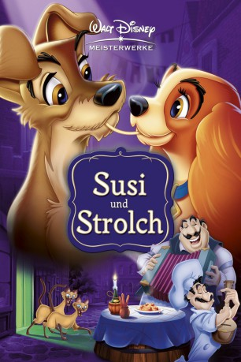

#2128 Susi und Strolch
 gesehen am 09.10.2015
gesehen am 09.10.2015
 
 IMDB-Wertung: 7.3 / 10
IMDB-Wertung: 7.3 / 10  Metascore: 0
Metascore: 0 
Die charmante Cockerdame Susi lebt in einem liebevoll behüteten Zuhause. Als allerdings eines Tages Tante Sarah mit den heimtückischen Katzen Si und Am zum Babysitten kommt, sind für Susi die harmonischen Tage vorbei. Sie reißt aus und trifft den frechen Vagabunden Strolch. Bei einem unvergesslichen romantischen Spaghettiessen kommen sich die beiden näher, und gemeinsam mit Strolch lernt Susi das abenteuerliche und ungebundene Leben auf der Straße kennen. Doch auf Susi warten ein Zuhause und eine Familie, die sie beschützen muss ...
Jahr: 1955
Dauer: 76 Minuten
FSK: 0
Land: USA Studio: Buena Vista Film Distribution CompanyTonspuren: DTS - ,
Untertitel: Deutsch,
Auflösung: 1080p (1920x752) Größe: 3194 MB
Genre: Komödie, Abenteuer, Animation/Trick, Familie, Liebe
Regisseur: Clyde Geronimi, Wilfred Jackson, Hamilton Luske
Drehbuch: Ward Greene, Erdman Penner, Joe Rinaldi, Ralph Wright, Don DaGradi
Soundtrack: Oliver Wallace
Darsteller:
- Peggy Lee als Darling / Si / Am / Peg
 Verna Felton als Aunt Sarah
Verna Felton als Aunt Sarah- Stan Freberg als Beaver
 Dal McKennon als Toughy / Professor / Pedro / Hyena
Dal McKennon als Toughy / Professor / Pedro / Hyena- Alan Reed als Boris
 Mel Blanc als Stray Dogs , uncredited
Mel Blanc als Stray Dogs , uncredited- Larry Roberts als Tramp
- Bill Baucom als Trusty
- George Givot als Tony
- Lee Millar als Jim Dear / Dog Catcher
- Barbara Luddy als Lady
- Bill Thompson als Jock / Bull - the Bull Terrier / Policeman at Zoo / Dachsie / Joe
- The Mellomen als Dogs , singing voice
Datei: X:\Kinder Disney HD\Susi und Strolch\Susi und Strolch (1955, FSK0, 1920x752).mkv seit 06.10.2015
Festplatte: Kinder-Filme+Trick
 Alle Filme aus Gruppe 'Kinder Disney HD\Susi und Strolch'
Alle Filme aus Gruppe 'Kinder Disney HD\Susi und Strolch'